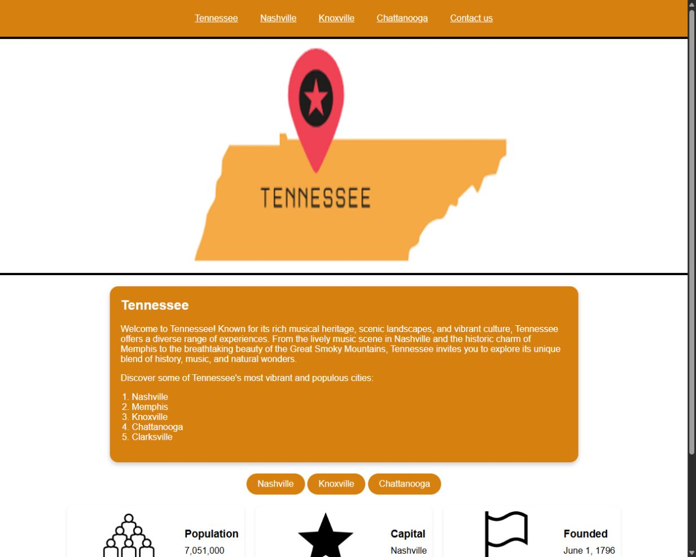

Coursework
Tennessee City Guide
Explore a five-page Tennessee website featuring Nashville, Knoxville, Chattanooga, and a contact-form example.
Overview
A preserved coursework website introducing Tennessee and three of its cities. It includes illustrated state facts, city statistics, and links to weather, maps, and local government information.


Key features
- State overview and illustrated facts.
- Dedicated Nashville, Knoxville, and Chattanooga pages.
- City weather, map, and government links.
- Contact-form demonstration with matching-email validation.
How it works
Separate state and city pages share the coursework navigation. The showcase provides context while keeping the original orange presentation and coursework URLs intact.
How to use
- Open the coursework and use its own menu to explore the state, cities, and form.
Project notes
The application’s original orange design and internal navigation are preserved.
The contact form is a coursework demonstration; it has no message-delivery backend.